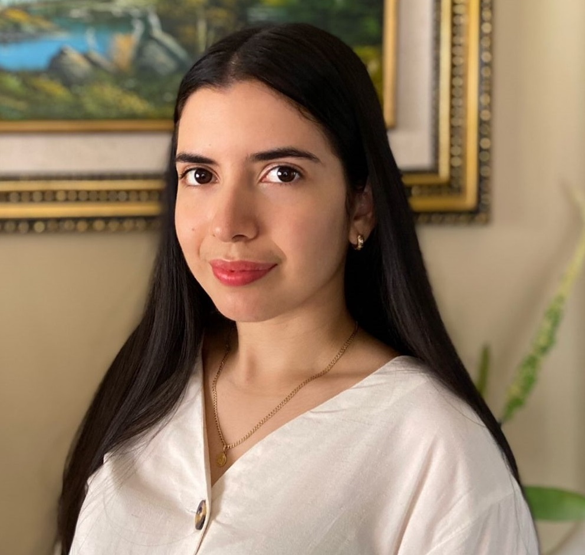

Contact Us
Registration and Contact Information
For any inquiries, please email us at chart.infographics@gmail.com.
For registration, pleace check here.
Organizer Information
 Kenny Davila |
Kenny received his B.E. degree in Computing Systems engineering from Universidad Tecnológica Centroamericana (UNITEC), Tegucigalpa, Honduras, in 2009. He received his M.Sc. in Computer Science and Ph.D. in Computing and Information Sciences degrees from Rochester Institute of Technology (RIT) Rochester, New York, USA in 2013 and 2017, respectively. In 2017, he joined the Center for Unified Biometrics and Sensors (CUBS), University at Buffalo as a post-doctoral associate. In 2020, he become a faculty member at Universidad Tecnológica Centroamericana in Honduras. His current research interests include chart mining, lecture video analysis, handwriting recognition, and mathematical information retrieval. |
 Fei Xu |
Fei received her bachelor’s degree in Electrical Engineering from Zhejiang University City College in Zhejiang, China, 2012. In 2015, she received her master’s degree in Computer Science from the University at Buffalo, New York, US, where she is now a Ph.D. student at the Center for Unified Biometrics and Sensors (CUBS). Her current research projects include human action recognition, affective computing and chart recognition. She received the best student paper award at the International Conference on Document Analysis and Recognition (ICDAR) 2019, and was featured in the IAPR The Next Generation in the IAPR Newsletter from April 2020. She will assist in the data set creation and in evaluation. |
 Saleem Ahmed |
Saleem received his B.Tech (2015) in Information Technology from NIT, Bilaspur, India, and his M.S (2019) in Computer Science with a specialization in Artificial Intelligence from University at Buffalo, SUNY USA. He is currently a Ph.D. candidate at the Department of Computer Science, University at Buffalo, SUNY. His primary research interest is graph matching and pattern retrieval problems with applications in document analysis. He has previously worked on video summarization and math search retrieval. His most recent work centers around building end-to-end chart data extraction models. He will assist in the evaluations for the competition. |
|  Nicole Rodriguez |
Nicole is an undergraduate student of Computing Systems Engineering at Universidad Tecnológica Centroamericana (UNITEC) in San Pedro Sula, Honduras. She has experience with programming algorithms, web development, computing theory and databases. She has previously worked on an undergrad research project in natural language processing, which was presented at the National Congress in Science, Technology and Innovation (CONACIETI 2022) in Honduras. She will assist in creating and extending tools for chart image annotation. |
 Srirangaraj Setlur |
Ranga is a Principal Research Scientist at the Center of Excellence for Document Analysis and Recognition and Center for Unified Biometrics and Sensors, Department of Computer Science and Engineering and Co-Director of the NSF Center for Identification Technology Research at the University at Buffalo, SUNY. He has contributed significantly to the development of real-time automated systems for handwriting recognition and multilingual OCR well as to the development of methodologies for evaluating the performance of large scale recognition systems. He is on the editorial board of IJDAR and is a co-author of the Springer Guide to OCR of Indic scripts. He is a Senior Member of IEEE and has held many leadership roles in Document Analysis and Biometrics conferences. He was a co-organizer of the first, second and third editions of the CHART-Infographics competition at ICDAR 2019, ICPR 2020, and ICPR 2022 and a co-investigator on the National Science Foundation grant that partially supports this work. He will coordinate the creation of the data set and benchmarking of the results. |
 Venu Govindraju |
Venu Govindaraju is SUNY Distinguished Professor of Computer Science and Engineering in the Department of Computer Science and Engineering, University at Buffalo, SUNY. He is the Director of the CUBS research group. Govindaraju’s research focuses on machine learning and pattern recognition applications in document analysis and biometrics and his seminal work in handwriting recognition was at the core of the first handwritten address interpretation system used by the U.S. Postal Service. Dr. Govindaraju has authored more than 400 scientific papers including over 80 journal papers. He has held many leadership positions in document analysis and biometrics conferences. He is a Fellow of many peers societies such as ACM and IEEE and is a Fellow of the National Academy of Inventors. He is a Fellow of the ACM, IEEE, IAPR, AAAS and the National Academy of Inventors. He was a co-organizer of the first, second and third editions of the CHART-Infographics competition at ICDAR 2019, ICPR 2020 and ICPR 2022 and is the PI on a National Science Foundation grant that partially supports this work. He will be coordinating the overall organization of the competition. |
| Rupak Lazarus |
Rupak is an MS by Research in Computer Science student at IIIT Hyderabad. His research interest is in chart understanding and the general document intelligence space. Previously, he worked as a Senior Machine Learning Engineer at AIMonk Labs Pvt Ltd, working on video analytics and document image analysis using computer vision and deep learning. He finished his undergraduate degree in Computer Engineering from Kadi Sarva Vishwavidyalaya, Gandhinagar, India, in 2017. |
| Ajoy Mondal |
Ajoy is a post doctoral fellow at CVIT, IIIT Hyderabad, India. He received the Ph.D. degree in computer science from Jadavpur University, Kolkata, India in 2018. He published more than 38 articles in the reputed journals and conferences. His research interests include document image processing, deep learning, machine learning, computer vision, pattern recognition and image processing. |
| C. V. Jawahar |
C. V. Jawahar is a Professor at IIIT Hyderabad, India. He received his PhD from IIT Kharagpur and has been with IIIT Hyderabad since 2000. At IIIT Hyderabad, Jawahar leads a group focusing on computer vision, machine learning, document analysis and multimedia systems. In recent years, he has been looking into a set of problems that overlap with vision, language and text. He is also interested in applications in road safety, assistive technologies, healthcare, education, cultural heritage and entertainment. He published more than 600 scientific papers in area of Computer Vision, Machine Learning, Robotics, Document Image Analysis. He has served as a chair for previous editions of ICCV, CVPR, ACCV, WACV, IJCAI, AAAI, ICDAR, ICFHR and ICVGIP. Presently, he is an area editor of CVIU and an associate editor of IEEE PAMI and IJDAR. Prof. Jawahar has been looking into a set of problems with focus on Indian context. He has worked extensively on vision, and language problems in document images, audio visual problems, digital heritage and digital libraries. He is also passionate about building systems and developing applications and resources. One of the recent introduction is a data set for research in road safety and autonomous navigation in Indian setting. He has been instrumental in setting up an intensive summer school series for graduate students in India. |